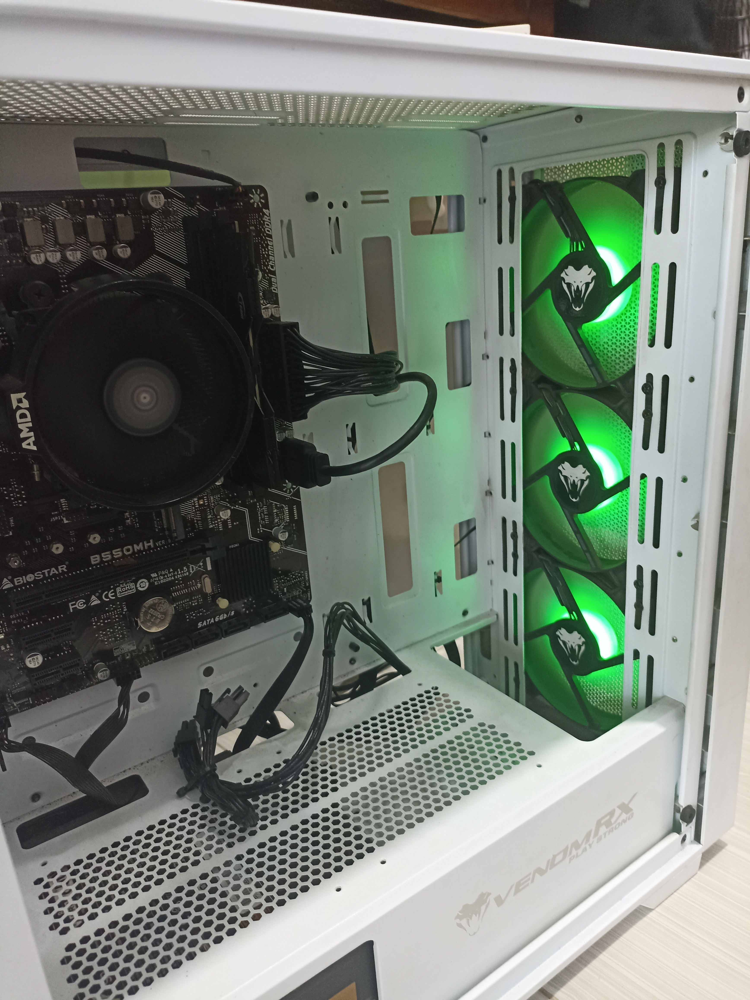

VS Code
Terbiasa dalam menggunakan kode editor VS Code untuk mengembangkan aplikasi dan website.
WEB PORTOFOLIO
AI Anthusias & Pengembang Web
Ini adalah web Portofolio yang saya buat untuk menunjukkan pencapaian dan pengalaman saya.

KENAL LEBIH DEKAT
Saya adalah Radhitya Aji Pratama, seorang mahasiswa UNESA yang sedang berkuliah di prodi Pendidikan Teknologi Informasi dengan NIM 26050974035, Saya sendiri merupakan penggemar AI dan memiliki cita-cita yang salah satunya adalah membuat sebuah AI. Saat ini saya sedang berkuliah semester 1. Sebelumnya saya juga pernah mengikuti beberapa kompetisi seperti ITNSA, LDI Bahasa Inggris, Dan Lain Sebagainya.
APA TOOLS YANG SAYA KUASAI ?
Saya memiliki beberapa keahlian dalam tools tools tertentu.
Terbiasa dalam menggunakan kode editor VS Code untuk mengembangkan aplikasi dan website.
Menguasai bahasa pemrograman Python untuk pengembangan aplikasi dan analisis data.
Menguasai konfigurasi dan pengelolaan jaringan menggunakan perangkat Mikrotik.
Beberapa Pencapaian yang Saya Capai
Inilah beberapa pencapaian yang telah saya raih.
Pengelolaan Jaringan
Mengelola Jaringan pada suatu ruangan agar bisa terhubung satu sama lain.

MAINTENANCE HARDWARE
Memperbaiki serta melakukan maintenance rutin pada perangkat keras komputer dan laptop.

MENGELOLA WEB SERVER
Membuat serta mengelola sebuah web server menggunakan MariaDB atau pun MySQL dengan phpMyAdmin.
HAL-HAL YANG SAYA KUASAI
Berikut ini adalah beberapa skill yang saya kuasai.
Memahami dan menerapkan konsep AI dan Machine Learning dalam solusi desain.
Mengidentifikasi dan menyelesaikan masalah secara kreatif dan efektif.
Mengajarkan konsep-konsep teknologi kepada orang lain.